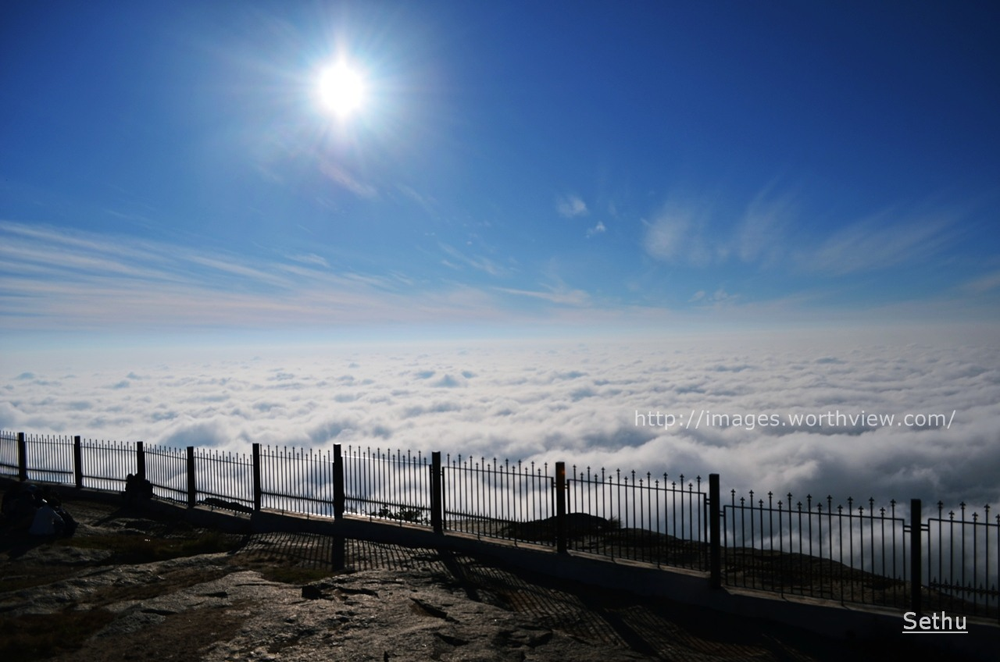

Nandi Hills (Anglicised forms include Nandidurg and Nandydoorg) is an ancient hill station built by Ganga Dynasty in the Chikkaballapur district of Karnataka state. It is 10 km from Chickballapur town and approximately 60 km from Bengaluru. The hills are near the town Nandi. In traditional belief, the hills are the origin of the Arkavathy river, Ponnaiyar River, Palar River, Papagni River and Penna River. Watching the sunrise at Nandi Hills is popular with tourists.The first ever SAARC summit hosted by India was held at Nandi Hills in 1986.
Nandi Hills was developed by Ganga Dynasty in 11th century.[7][8] It was also used by Tipu Sultan as a summer retreat.
Nandidurga was traditionally held impregnable, and its storming by the army of Cornwallis on 19 October 1791 was one of the most notable incidents of the first war against Tipu Sultan of Mysore. A description of the siege is given in Browne's History of Scotland and the records of the 71st Highlanders.
Nundydroog, a celebrated fortress and country of Hindostan, in the province of Mysore. The former is built on the summit of a rock, about 1700 feet high, three-fourths of its circumference being inaccessible. Our forces took it by storm in 1791, after a three weeks' siege. It stands in long. 77° 53' E., and lat. 13° 22' N.
Nandi Hills is a destination for hiking and trekking for beginners to intermediate level. Trails in the area include the staircase-based trekking path which starts near Sultanpet village.
As of March 2022, visitors require prior District administration passes to visit Nandi hills on weekends to manage parking and reduce overcrowding on the hill station. Only 1,000 two-wheelers and 300 light motor vehicles parking is allowed on the hill station. Passes can be purchased at the Ticket counter at the base of the hill station or through KSTDC website. Earlier Nandi Hills was closed due to Covid restrictions.
